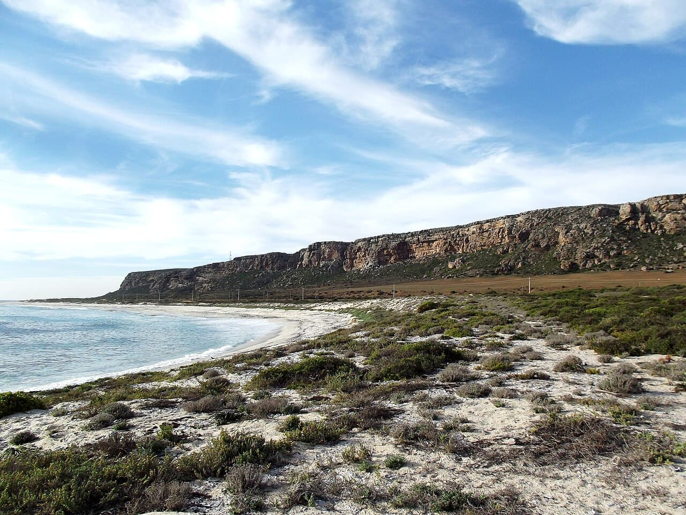

Elands Bay
Afrique du Sud · surf, bodyboard

Une longue gauche de pointe sur la côte ouest, dans une eau très froide remontée par le courant de Benguela. Spot de bout du monde, peu de monde à l'eau.
- Lieu
- Afrique du Sud
- Niveau
- Intermédiaire
- Activités
- surf, bodyboard
- Type d'eau
- Mer / océan
- Coordonnées
- -32.31, 18.33 (position approximative du secteur)
Dangers à connaître
- Eau souvent sous 15°C : combinaison épaisse obligatoire.
- Rochers à l'entrée du pic.
- Courant qui pousse le long de la pointe.
Le conseil d'Ocean Buddy
Combinaison 4/3 minimum, cagoule utile. Entre par les rochers du haut de la pointe.
Ouvrir dans Ocean Buddy Télécharger sur l'App Store
Source : Description historique Ocean Buddy · vérification externe en attente.